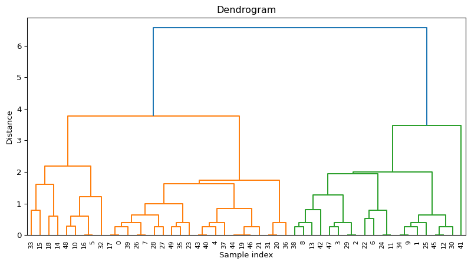

import pandas as pd
import altair as alt
from sklearn.datasets import load_iris
from sklearn.cluster import AgglomerativeClustering
from sklearn.preprocessing import StandardScaler
from sklearn.pipeline import Pipeline
from scipy.cluster.hierarchy import dendrogram,linkage
import matplotlib.pyplot as pltHierachical Agglomerative Clustering (HAC)
Importar las librerías
Cargar el dataset
iris = load_iris()
X = pd.DataFrame(iris.data,columns=iris.feature_names)[['sepal length (cm)','sepal width (cm)']].iloc[:50]
X| sepal length (cm) | sepal width (cm) | |
|---|---|---|
| 0 | 5.1 | 3.5 |
| 1 | 4.9 | 3.0 |
| 2 | 4.7 | 3.2 |
| 3 | 4.6 | 3.1 |
| 4 | 5.0 | 3.6 |
| 5 | 5.4 | 3.9 |
| 6 | 4.6 | 3.4 |
| 7 | 5.0 | 3.4 |
| 8 | 4.4 | 2.9 |
| 9 | 4.9 | 3.1 |
| 10 | 5.4 | 3.7 |
| 11 | 4.8 | 3.4 |
| 12 | 4.8 | 3.0 |
| 13 | 4.3 | 3.0 |
| 14 | 5.8 | 4.0 |
| 15 | 5.7 | 4.4 |
| 16 | 5.4 | 3.9 |
| 17 | 5.1 | 3.5 |
| 18 | 5.7 | 3.8 |
| 19 | 5.1 | 3.8 |
| 20 | 5.4 | 3.4 |
| 21 | 5.1 | 3.7 |
| 22 | 4.6 | 3.6 |
| 23 | 5.1 | 3.3 |
| 24 | 4.8 | 3.4 |
| 25 | 5.0 | 3.0 |
| 26 | 5.0 | 3.4 |
| 27 | 5.2 | 3.5 |
| 28 | 5.2 | 3.4 |
| 29 | 4.7 | 3.2 |
| 30 | 4.8 | 3.1 |
| 31 | 5.4 | 3.4 |
| 32 | 5.2 | 4.1 |
| 33 | 5.5 | 4.2 |
| 34 | 4.9 | 3.1 |
| 35 | 5.0 | 3.2 |
| 36 | 5.5 | 3.5 |
| 37 | 4.9 | 3.6 |
| 38 | 4.4 | 3.0 |
| 39 | 5.1 | 3.4 |
| 40 | 5.0 | 3.5 |
| 41 | 4.5 | 2.3 |
| 42 | 4.4 | 3.2 |
| 43 | 5.0 | 3.5 |
| 44 | 5.1 | 3.8 |
| 45 | 4.8 | 3.0 |
| 46 | 5.1 | 3.8 |
| 47 | 4.6 | 3.2 |
| 48 | 5.3 | 3.7 |
| 49 | 5.0 | 3.3 |
Pipeline
pipeline = Pipeline(
[
('scaler',StandardScaler()),
('agglo',AgglomerativeClustering(n_clusters=3))
]
)Fit
labels = pipeline.fit_predict(X)
labelsarray([2, 0, 0, 0, 2, 1, 0, 2, 0, 0, 1, 0, 0, 0, 1, 1, 1, 2, 1, 1, 2, 1,
0, 2, 0, 0, 2, 2, 2, 0, 0, 2, 1, 1, 0, 2, 2, 2, 0, 2, 2, 0, 0, 2,
1, 0, 1, 0, 1, 2])Visualizar los clusters
Creacion del dataframe para la viz
X_scaled = pipeline.named_steps['scaler'].transform(X)
df_viz = pd.DataFrame(X_scaled,columns=['Feature1','Feature2'])
df_viz['clusters'] = labels.astype(str)
df_viz['index'] = X.index.astype(str)
df_viz| Feature1 | Feature2 | clusters | index | |
|---|---|---|---|---|
| 0 | 0.269382 | 0.191870 | 2 | 0 |
| 1 | -0.303771 | -1.140559 | 0 | 1 |
| 2 | -0.876924 | -0.607588 | 0 | 2 |
| 3 | -1.163501 | -0.874073 | 0 | 3 |
| 4 | -0.017195 | 0.458355 | 2 | 4 |
| 5 | 1.129111 | 1.257813 | 1 | 5 |
| 6 | -1.163501 | -0.074616 | 0 | 6 |
| 7 | -0.017195 | -0.074616 | 2 | 7 |
| 8 | -1.736653 | -1.407045 | 0 | 8 |
| 9 | -0.303771 | -0.874073 | 0 | 9 |
| 10 | 1.129111 | 0.724841 | 1 | 10 |
| 11 | -0.590348 | -0.074616 | 0 | 11 |
| 12 | -0.590348 | -1.140559 | 0 | 12 |
| 13 | -2.023230 | -1.140559 | 0 | 13 |
| 14 | 2.275417 | 1.524299 | 1 | 14 |
| 15 | 1.988841 | 2.590242 | 1 | 15 |
| 16 | 1.129111 | 1.257813 | 1 | 16 |
| 17 | 0.269382 | 0.191870 | 2 | 17 |
| 18 | 1.988841 | 0.991327 | 1 | 18 |
| 19 | 0.269382 | 0.991327 | 1 | 19 |
| 20 | 1.129111 | -0.074616 | 2 | 20 |
| 21 | 0.269382 | 0.724841 | 1 | 21 |
| 22 | -1.163501 | 0.458355 | 0 | 22 |
| 23 | 0.269382 | -0.341102 | 2 | 23 |
| 24 | -0.590348 | -0.074616 | 0 | 24 |
| 25 | -0.017195 | -1.140559 | 0 | 25 |
| 26 | -0.017195 | -0.074616 | 2 | 26 |
| 27 | 0.555958 | 0.191870 | 2 | 27 |
| 28 | 0.555958 | -0.074616 | 2 | 28 |
| 29 | -0.876924 | -0.607588 | 0 | 29 |
| 30 | -0.590348 | -0.874073 | 0 | 30 |
| 31 | 1.129111 | -0.074616 | 2 | 31 |
| 32 | 0.555958 | 1.790784 | 1 | 32 |
| 33 | 1.415688 | 2.057270 | 1 | 33 |
| 34 | -0.303771 | -0.874073 | 0 | 34 |
| 35 | -0.017195 | -0.607588 | 2 | 35 |
| 36 | 1.415688 | 0.191870 | 2 | 36 |
| 37 | -0.303771 | 0.458355 | 2 | 37 |
| 38 | -1.736653 | -1.140559 | 0 | 38 |
| 39 | 0.269382 | -0.074616 | 2 | 39 |
| 40 | -0.017195 | 0.191870 | 2 | 40 |
| 41 | -1.450077 | -3.005959 | 0 | 41 |
| 42 | -1.736653 | -0.607588 | 0 | 42 |
| 43 | -0.017195 | 0.191870 | 2 | 43 |
| 44 | 0.269382 | 0.991327 | 1 | 44 |
| 45 | -0.590348 | -1.140559 | 0 | 45 |
| 46 | 0.269382 | 0.991327 | 1 | 46 |
| 47 | -1.163501 | -0.607588 | 0 | 47 |
| 48 | 0.842535 | 0.724841 | 1 | 48 |
| 49 | -0.017195 | -0.341102 | 2 | 49 |
Visualización
scatter = alt.Chart(df_viz).mark_circle(size=65).encode(
alt.X('Feature1'),
alt.Y('Feature2'),
alt.Color('clusters'),
tooltip=['Feature1','Feature2','index']
).interactive()
texto_scatter = alt.Chart(df_viz).mark_text(
align='left',
dx=5,
baseline='middle'
).encode(
alt.X('Feature1'),
alt.Y('Feature2'),
text='index'
)
(scatter + texto_scatter).properties(
width=500,
height=500
)Visualizar dendrogram
Creación del linked
#X_scaled
#‘ward’, ‘complete’, ‘average’, ‘single’}
linked = linkage(X_scaled,method='complete')Dendrogram
plt.figure(figsize=(10, 5))
dendrogram(linked,
orientation='top',
distance_sort='descending',
show_leaf_counts=False)
plt.title("Dendrogram")
plt.xlabel("Sample index")
plt.ylabel("Distance")
# plt.grid(True)
plt.show()